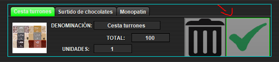

Para confirmar un artículo, seleccionamos el botón verde de confirmar, la etiqueta se volverá
de color verde, y el contador de puntos canjeados se reducirá proporcionalmente al valor del regalo.
Ya puede ver el artículo en el pedido si lo visualiza, ya que está confirmado. Una vez confirmado
se deshabilitan ambos botones, si no queremos que se confirme el artículo tenemos que
volver atrás, se mantendrán en la cesta aquellos que no hemos borrado, con el inconveniente de que
luego tendremos que confirmarlos de nuevo en esta pantalla cuando volvamos si ya lo habíamos confirmado previamente).
